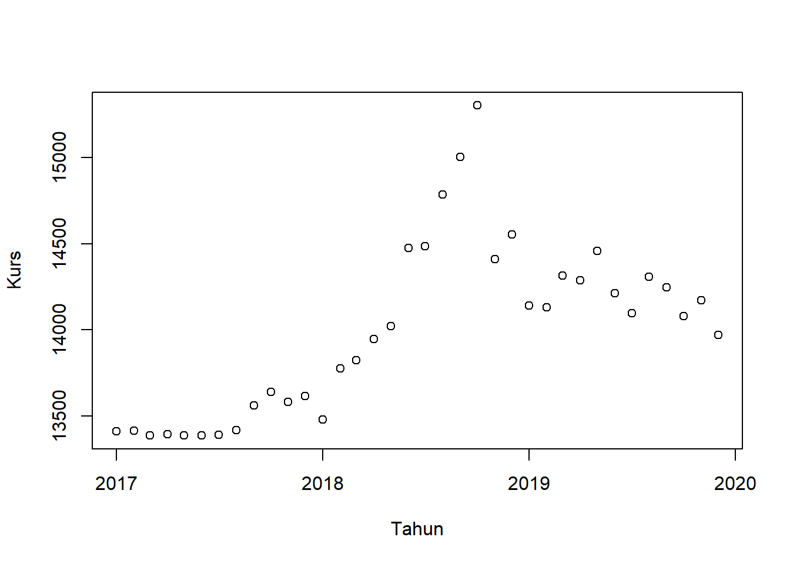
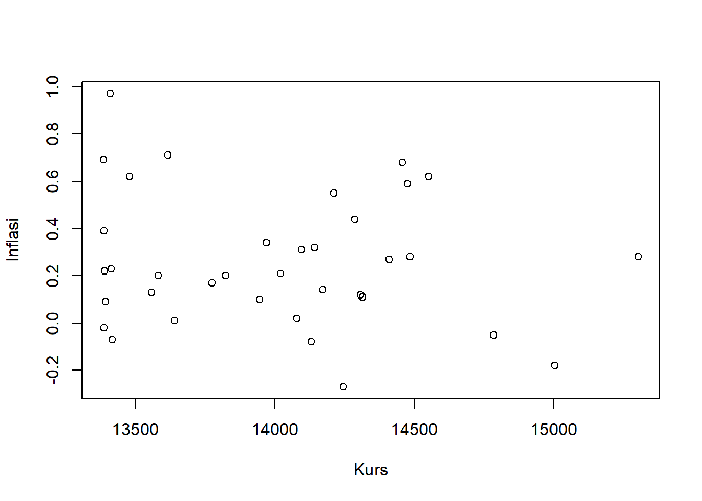
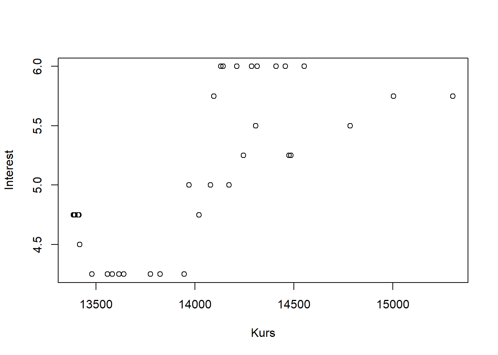

setwd('C:/Users/GITA/OneDrive/Dokumen/Metopel/Latihan')
library(tidyverse)
library(readxl)Pengaruh Inflasi dan Tingkat Suku Bunga Terhadap Kurs Mata Uang di Indonesia pada tahun 2017-2019
Metode Penelitian Politeknik APP Jakarta
1 1. Pendahuluan
1.1 1.1 Latar belakang
Globalisasi menyebabkan kegiatan ekonomi sekarang menjadi satu kesatuan global. Perubahan yang terjadi pada ekonomi suatu negara, dapat memengaruhi ekonomi negara lain terutama negara yang memiliki hubungan ekonomi yang sangat erat. Perubahan kegiatan ekonomi biasanya terlihat dalam perubahan atau fluktuasi nilai mata uang. Secara umum yang memengaruhi nilai tukar adalah faktor fundamental, faktor teknis, faktor psikologis dan faktor spekulasi sedangkan secara tidak langsung penawaran (supply) dan permintaan (demand) dari suatu mata uang dipengaruhi oleh neraca pembayaran, tingkat inflasi, tingkat suku bunga, tingkat pendapatan, peraturan dan kebijakan pemerintah. Berdasarkan teori makroekonomi ada empat faktor yang dapat memengaruhi nilai tukar, yaitu tingkat suku bunga, tingkat inflasi, peredaran uang dan neraca pembayaran. Namun, tingkat suku bunga dan inflasi sangat penting dalam memengaruhi nilai tukar.
Inflasi adalah salah satu faktor yang sangat berpengaruh kepada kurs pertukaran valuta asing. Boediono (2013: 161) menjelaskan pengertian inflasi adalah kecenderungan dari harga-harga untuk menaik secara umum dan terus-menerus. Kenaikan harga dari satu atau dua barang saja tidak disebut inflasi, kecuali bila kenaikan tersebut meluas kepada (atau mengakibatkan kenaikan) sebagian besar dari harga barang-barang lain. Inflasi yang berlaku pada umumnya cenderung untuk menurunkan nilai suatu valuta asing. Kecenderungan seperti ini wujud disebabkan efek inflasi berikut: (i) inflasi menyebabkan harga-harga di dalam negeri lebih mahal dari harga-harga di luar negri dan oleh sebab itu inflasi berkecenderungan menambah impor, (ii) inflasi menyebabkan harga-harga barang ekspor menjadi lebih mahal, oleh karena itu inflasi berkecenderungan mengurangi ekspor. Keadaan (i) menyebabkan permintaan ke atas valuta asing bertambah, dan keadaan (ii) menyebabkan penawaran ke atas valuta asing berkurang; maka harga valuta asing akan bertambah, ini berarti harga mata uang negara yang mengalami inflasi melorot (Sadono Sukirno, 2013:402).
Nilai tukar dapat diartikan sebagai jumlah uang dalam negeri yang dibutuhkan, yaitu jumlah rupiah yang dibutuhkan untuk memperoleh satu unit mata uang asing. Nilai tukar dapat diartikan sebagai harga dari suatu mata uang domestik terhadap mata uang negara lain. Jika keadaan nilai mata uang di suatu negara stabil, menunjukkan bahwa negara tersebut memiliki kondisi ekonomi yang relatif baik. Pergerakan nilai tukar dipengaruhi oleh berbagai faktor yang bersifat ekonomi maupun non ekonomi, seperti arus modal atau investasi perdagangan internasional dan keadaan sosial maupun politik pada negara tersebut.
Suku bunga merupakan tolak ukur dari kegiatan perekonomian suatu negara yang berimbas pada kegiatan perputaran arus keuangan perbankan, inflasi, investasi dan pergerakan mata uang di suatu negara. Suku bunga yang tinggi maupun yang rendah akan sangat berpengaruh terhadap perekonomian. Ketika tingkat bunga tinggi maka akan mendorong para investor untuk menanamkan dana di bank dibandingkan menginvestasikannya pada sektor industri yang risikonya lebih besar sehingga laju inflasi dapat terkendali.
Maka berdasarkan latar belakang tersebut penulis ingin melakukan penelitian dengan judul “Pengaruh Inflasi dan Tingkat Suku Bunga Terhadap Kurs Mata Uang di Indonesia pada tahun 2017-2019”.
1.2 1.2 Ruang lingkup
Ruang lingkup dalam penelitian kali ini, membahas seputar pengaruh inflasi dan tingkat suku bunga terhadap kurs mata uang di Indonesia pada tahun 2017-2019.
1.3 1.3 Rumusan masalah
- Bagaimanakah pengaruh Inflasi terhadap kurs mata uang di Indonesia pada tahun 2017-2019?
- Bagaimanakah pengaruh suku bunga terhadap kurs mata uang di Indonesia pada tahun 2017-2019?
- Apakah inflasi dan suku bunga dapat memengaruhi kurs mata uang di Indonesia pada tahun 2017-2019?
1.4 1.4 Tujuan dan manfaat penelitian
Tujuan penelitian ini untuk mengetahui apakah inflasi dan suku bunga berpengaruh terhadap kurs mata uang di Indonesia pada tahun 2017-2019. Serta untuk mengetahui hubungan antara inflasi dan suku bunga saling berkaitan satu sama lain dengan menggunakan regresi linear berganda.
Hasil dari penelitian ini diharapkan dapat memberi manfaat untuk penulis, penelitian ini bermanfaat menambah pengetahuan mengenai hubungan inflasi dan suku bunga berpengaruh pada kurs mata uang di Indonesia. Serta, bagi pemerintah, penelitian ini bermanfaat untuk menjaga kestabilan kurs mata uang domestik sehingga pergerakan roda perekonomian tetap stabil.
1.5 1.5 Package
Ini tidak wajib ada di packages yang digunakan antara lain sebagai berikut:
── Attaching packages ─────────────────────────────────────────── tidyverse 1.3.2 ──
✔ ggplot2 3.3.6 ✔ purrr 0.3.5
✔ tibble 3.1.8 ✔ dplyr 1.0.10
✔ tidyr 1.2.1 ✔ stringr 1.4.1
✔ readr 2.1.3 ✔ forcats 0.5.2
── Conflicts ────────────────────────────────────────────── tidyverse_conflicts() ──
✖ dplyr::filter() masks stats::filter()
✖ dplyr::lag() masks stats::lag()2 2. Studi pustaka
Inflasi
Menurut Rahardja, inflasi merupakan harga yang berguna untuk terus naik secara umum. Ketika harga barang naik hampir sebagian besar dari harga barang pada umumnya, maka istilah inflasi disebut.
Tingkat suku bunga
Menurut pandangan klasik Keynes (Nopirin, 2000:90) mendefenisikan tingkat bunga sebagai fenomena moneter. Artinya tingkat bunga ditentukan oleh penawaran dan permintaan akan uang (ditentukan dalam pasar uang). Uang akan berpengaruh terhadap kegiatan ekonomi, selama uang mempengaruhi tingkat bunga.
Ada 3 teori yang berkaitan dengan pembahasan penelitian ini,
- Teori PPP berfokus pada hubungan antara perbedaan laju inflasi dengan pergerakan nilai tukar di masa depan.
- Teori IFE berfokus pada hubungan antara selisih suku bunga dengan pergerakan nilai tukar di masa depan.
- Teori Paritis Suku Bunga (IRP) berfokus pada hubungan antara perbedaan suku bunga dengan premium (diskon) kurs forward pada satu titik waktu tertentu.
3 3. Metode penelitian
3.1 3.1 Data
Data yang digunakan dalam penelitian ini menunjukkan data inflasi, tingkat suku bunga, serta kurs jual di Indonesia selama setiap bulan pada tahun 2017-2019.
penelitian ini menggunakan data
| Tahun | Inflasi | Interest | Kurs |
|---|---|---|---|
| Jan-17 | 0.97 | 4.75 | Rp 13,410.00 |
| Feb-17 | 0.23 | 4.75 | Rp 13,414.00 |
| Mar-17 | -0.02 | 4.75 | Rp 13,388.00 |
| Apr-17 | 0.09 | 4.75 | Rp 13,394.00 |
| May-17 | 0.39 | 4.75 | Rp 13,388.00 |
| Jun-17 | 0.69 | 4.75 | Rp 13,386.00 |
| Jul-17 | 0.22 | 4.75 | Rp 13,390.00 |
| Aug-17 | -0.07 | 4.5 | Rp 13,418.00 |
| Sep-17 | 0.13 | 4.25 | Rp 13,559.00 |
| Oct-17 | 0.01 | 4.25 | Rp 13,640.00 |
| Nov-17 | 0.2 | 4.25 | Rp 13,582.00 |
| Dec-17 | 0.71 | 4.25 | Rp 13,616.00 |
| Jan-18 | 0.62 | 4.25 | Rp 13,480.00 |
| Feb-18 | 0.17 | 4.25 | Rp 13,776.00 |
| Mar-18 | 0.2 | 4.25 | Rp 13,825.00 |
| Apr-18 | 0.1 | 4.25 | Rp 13,946.00 |
| May-18 | 0.21 | 4.75 | Rp 14,021.00 |
| Jun-18 | 0.59 | 5.25 | Rp 14,476.00 |
| Jul-18 | 0.28 | 5.25 | Rp 14,485.00 |
| Aug-18 | -0.05 | 5.5 | Rp 14,785.00 |
| Sep-18 | -0.18 | 5.75 | Rp 15,004.00 |
| Oct-18 | 0.28 | 5.75 | Rp 15,303.00 |
| Nov-18 | 0.27 | 6 | Rp 14,411.00 |
| Dec-18 | 0.62 | 6 | Rp 14,553.00 |
| Jan-19 | 0.32 | 6 | Rp 14,142.00 |
| Feb-19 | -0.08 | 6 | Rp 14,132.00 |
| Mar-19 | 0.11 | 6 | Rp 14,315.00 |
| Apr-19 | 0.44 | 6 | Rp 14,286.00 |
| May-19 | 0.68 | 6 | Rp 14,457.00 |
| Jun-19 | 0.55 | 6 | Rp 14,212.00 |
| Jul-19 | 0.31 | 5.75 | Rp 14,096.00 |
| Aug-19 | 0.12 | 5.5 | Rp 14,308.00 |
| Sep-19 | -0.27 | 5.25 | Rp 14,245.00 |
| Oct-19 | 0.02 | 5 | Rp 14,078.00 |
| Nov-19 | 0.14 | 5 | Rp 14,173.00 |
| Dec-19 | 0.34 | 5 | Rp 13,971.00 |

Penelitian menggunakan data
library(readxl)
dat<-read_excel('regresilong.xlsx')
head(dat)# A tibble: 6 × 4
Tahun Inflasi Interest Kurs
<dttm> <dbl> <dbl> <dbl>
1 2017-01-01 00:00:00 0.97 4.75 13410
2 2017-02-01 00:00:00 0.23 4.75 13414
3 2017-03-01 00:00:00 -0.02 4.75 13388
4 2017-04-01 00:00:00 0.09 4.75 13394
5 2017-05-01 00:00:00 0.39 4.75 13388
6 2017-06-01 00:00:00 0.69 4.75 13386dat$Tahun_dan_Ekspor <- plot(dat$Tahun,dat$Kurs,xlab = 'Tahun',ylab = 'Kurs')
dat$Tahun_dan_GDP <- plot(dat$Kurs,dat$Inflasi,xlab = 'Kurs',ylab = 'Inflasi')
dat$GDP_dan_Ekspor <- plot(dat$Kurs,dat$Interest,xlab = 'Kurs',ylab = 'Interest') 
3.2 Metode analisis
Metode yang dipilih adalah regresi univariat atau Ordinary Least Square (OLS) dengan 1 variabel independen. Penelitian ini bermaksud mencari hubungan antara inflasi dan suku bunga terhadap kurs mata uang di Indonesia pada tahun 2017-2019. Berikut datanya seperti dibawah ini.
\[ y_{t}=\beta_0 + \beta_1 x_t+\mu_t \] di mana \(y_t\) adalah kurs dan \(x_t\) adalah inflasi dan suku bunga
4 Pembahasan
4.1 Pembahasan masalah
Dalam pembahasan masalah ini saya menggunakan metode OLS dikarenakan data yang diambil merupakan data univariat yang menampilkan hubungan yang saling mempengaruhi dan dipengaruhi, seperti contoh tingkat suku bunga dan inflasi mempengaruhi kurs mata uang di Indonesia pada tahun 2017-2019. Ketiga variabel tersebut (suku bunga, inflasi, dan kurs) diregresi dan menampilkan data seperti dibawah ini.
library(readxl)
dat<-read_excel('regresilong.xlsx')
head(dat)# A tibble: 6 × 4
Tahun Inflasi Interest Kurs
<dttm> <dbl> <dbl> <dbl>
1 2017-01-01 00:00:00 0.97 4.75 13410
2 2017-02-01 00:00:00 0.23 4.75 13414
3 2017-03-01 00:00:00 -0.02 4.75 13388
4 2017-04-01 00:00:00 0.09 4.75 13394
5 2017-05-01 00:00:00 0.39 4.75 13388
6 2017-06-01 00:00:00 0.69 4.75 133864.2 Analisis masalah
Hasil regresinya adalah
reg1 <- lm(Kurs ~ Interest+Inflasi,data=dat)
summary(reg1)
Call:
lm(formula = Kurs ~ Interest + Inflasi, data = dat)
Residuals:
Min 1Q Median 3Q Max
-503.76 -263.97 34.24 202.76 944.48
Coefficients:
Estimate Std. Error t value Pr(>|t|)
(Intercept) 11245.76 455.91 24.666 < 2e-16 ***
Interest 555.80 88.46 6.283 4.21e-07 ***
Inflasi -296.80 209.53 -1.417 0.166
---
Signif. codes: 0 '***' 0.001 '**' 0.01 '*' 0.05 '.' 0.1 ' ' 1
Residual standard error: 345.6 on 33 degrees of freedom
Multiple R-squared: 0.5534, Adjusted R-squared: 0.5264
F-statistic: 20.45 on 2 and 33 DF, p-value: 1.671e-065 Kesimpulan
Dapat diambil kesimpulan bahwa kurs nilai tukar mata uang di Indonesia pada tahun 2017-2019 lebih dipengaruhi oleh tingkat suku bunga dibandingkan inflasi. Hal ini dipengaruhi karena inflasi tersebut dipengaruhi juga oleh tingkat suku bunga, jadi jikalau tingkat suku bunga ada kenaikan dan penurunan, langsung akan berpengaruh terhadap nilai tukar bukan hanya inflasi saja
6 Referensi
Badan Pusat Statistik. (n.d.). Retrieved January 19, 2023, from https://www.bps.go.id/indicator/13/379/1/bi-rate.html Badan Pusat Statistik. (n.d.). Retrieved January 19, 2023, from https://www.bps.go.id/indicator/3/1/3/inflasi-umum-.html Kurs Transaksi BI. (n.d.). Retrieved January 19, 2023, from https://www.bi.go.id/id/statistik/informasi-kurs/transaksi-bi/Default.aspx Noor, Z. Z. (2011). Pengaruh Inflasi, Suku Bunga, dan Jumlah Uang Beredar terhadap Nilai Tukar. 10(2). Ningsih, F. (2015, June 5). Softskill: Pengaruh Suku Bunga Terhadap Nilai Tukar. Softskill. https://fitriningsih5.blogspot.com/2015/06/pengaruh-suku-bunga-terhadap-nilai-tukar.html Rusdiana, Y., Valentika, N., Ilmadi, I., & Isnurani, I. (2021). ANALISIS HUBUNGAN EKSPOR, IMPOR, INFLASI DAN TINGKAT SUKU BUNGA TERHADAP KURS RUPIAH. Delta: Jurnal Ilmiah Pendidikan Matematika, 9, 169. https://doi.org/10.31941/delta.v9i2.1204